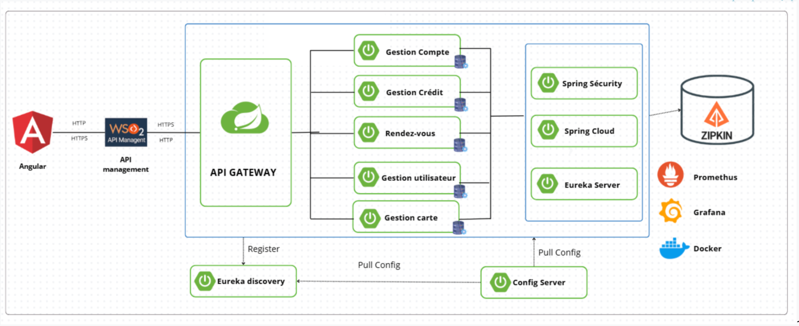
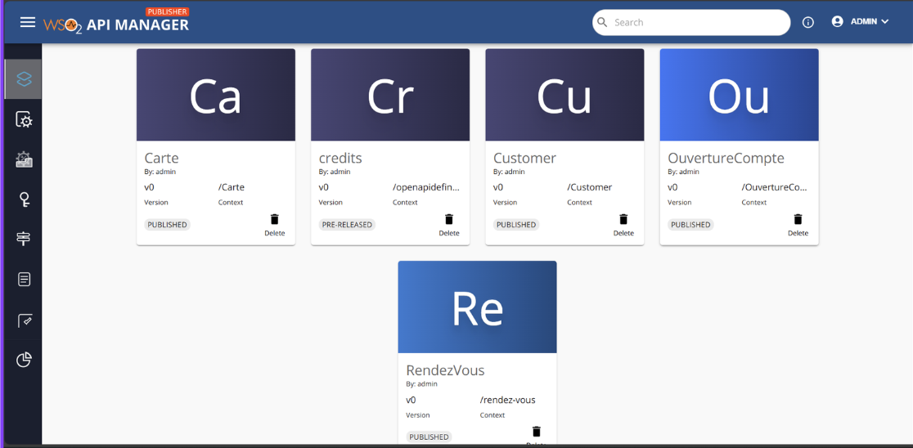
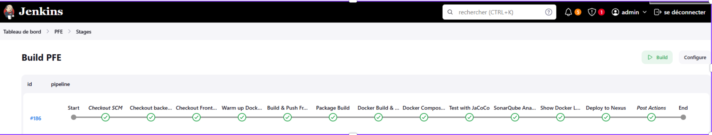
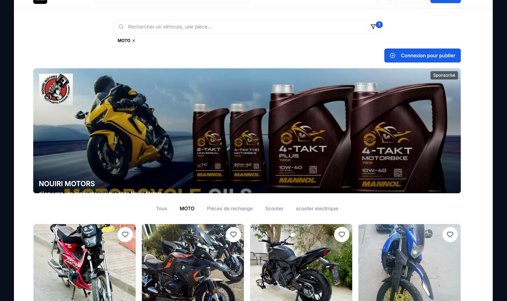

Portfolio / Software Engineering
Junior Software Engineer building business-oriented web platforms.
I’m Yosr Zayani, a software engineering graduate specialized in full stack web development, microservices, REST APIs and DevOps practices. My strongest experience is a banking platform built with Spring Boot, Angular, WSO2 API Manager, Docker and Jenkins.
About
A junior profile with practical full stack and architecture exposure.
I am a junior full stack software engineer with hands-on experience in web applications, dashboards, REST APIs, microservices and CI/CD workflows. I have worked with Java Spring Boot, Angular, React, Node.js, MySQL, MongoDB, Docker and WSO2 API Manager.
My profile is best suited for teams looking for a motivated junior developer who can understand both frontend implementation and backend architecture, communicate clearly, and grow quickly inside a structured engineering environment.
Experience
Experience that supports my target roles
Full Stack Freelance Developer — Moutouri
Built a marketplace platform for motorcycles and motorcycle parts, including shop registration, product management, role-based dashboards and public listings.
Final Year Project — BIAT-IT
Built a secure banking web platform covering account opening, credit requests, appointments and notifications using microservices, API Gateway, WSO2 API Manager and DevOps automation.
Engineering Internship — SAGEMCOM
Automated an ETL process with Python, modeled industrial production data with SQL Server and created Power BI dashboards for analysis.
Immersion Internship — StartNow
Developed React.js frontend interfaces for a reporting tool and collaborated with a development team using GitLab.
Stack
Technical skills
Frontend
React.js, Angular, JavaScript, TypeScript, HTML5, CSS3, Tailwind CSS
Backend & APIs
Spring Boot, Node.js, Express.js, REST APIs, Microservices, API Gateway, WSO2 API Manager
Database
MySQL, MongoDB, SQL Server, SQL, data modeling and integration
DevOps
Docker, Jenkins, CI/CD, Git, GitLab, Nexus, SonarQube, Nginx, Kubernetes basics
Testing
JUnit, Mockito, unit testing, integration testing, Postman API testing
Methods & AI
Agile, Scrum, Kanban, AI fundamentals, AI tools and basics of AI agents
Selected Work
Selected case studies with real technical context.
Featured Project • Banking Platform
Open Banking Platform — BIAT
A secure microservices-based banking platform for account opening, credit requests, appointments, card requests and notifications. This case study highlights architecture, API management, security, DevOps and frontend integration.


API Management
WSO2 API Manager Integration
Published and managed banking APIs with lifecycle and security considerations.

DevOps Automation
Jenkins CI/CD Pipeline
Automated build, test, quality analysis, Docker packaging and deployment stages.

Marketplace Full Stack
Moutouri Marketplace
Motorcycle marketplace with shop registration, products, categories and publication features.
Learning path
SAP Commerce Cloud / Hybris 2205 + Spartacus
I am currently learning SAP Commerce / Hybris 2205, including local setup, extensions, OCC APIs, catalog concepts, storefront configuration and Spartacus Angular storefront development.
Contact
Let’s connect.
I’m open to junior full stack, frontend, backend, QA automation and SAP Commerce learning opportunities in Tunisia or remote-friendly teams.